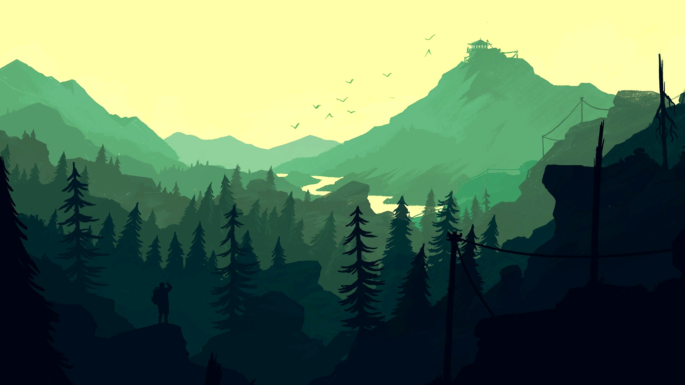
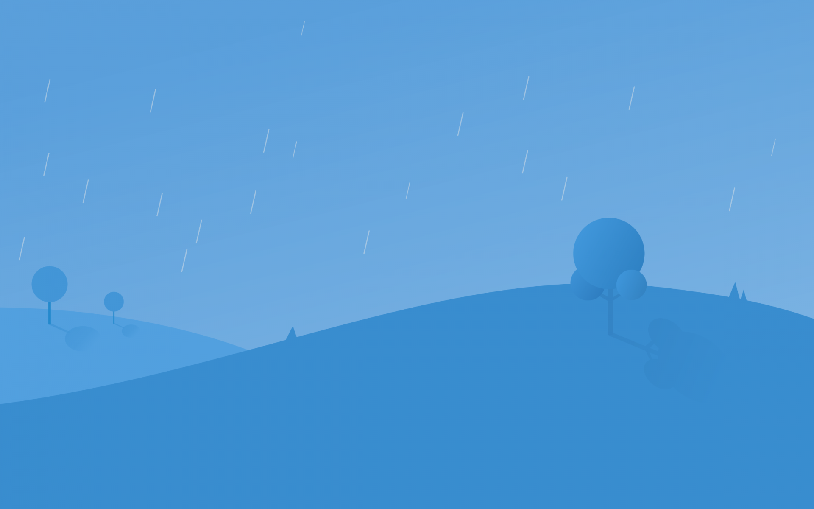
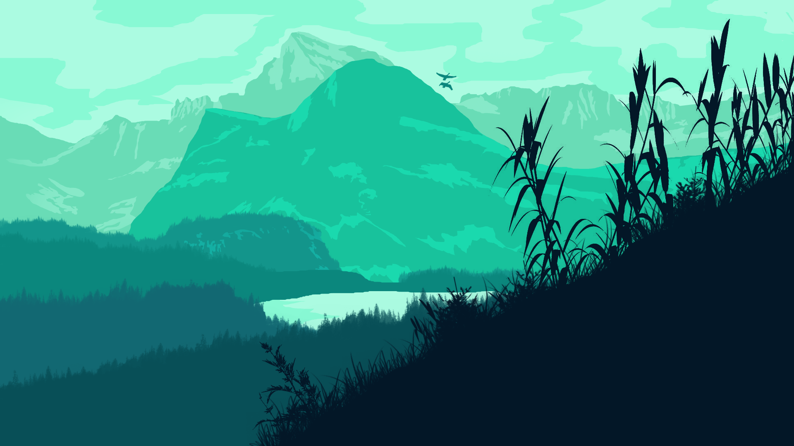

Безупречные преимущества
Только нужное
Юзабилити
Иногда труднее всего найти самые простые вещи. Итак, мы создали новую линию для повседневной жизни
Параллакс эффект
Иногда труднее всего найти самые простые вещи. Итак, мы создали новую линию для повседневной жизни
Много цветов
Иногда труднее всего найти самые простые вещи. Итак, мы создали новую линию для повседневной жизни
Какой бывает погода
Погода отличается большим разнообразием
Солнечная
Когда на улице греет солнце, тепло и люди ходят в легкой одежде. Такая погода бывает летом в июне, июле, августе. Это самое комфортное для человека время, но бывает, что солнце печет очень сильно и тогда земля пересыхает, возникает опасность лесных пожаров, разных погодных разрушений.
Дождливая
В эту погоду на улице идет дождь, люди ходят с зонтиками или прячутся под навесами. Чаще такое бывает осенью, но может зарядить и летом, портя настроение и заставляя сидеть дома. Дождь может причинить большой ущерб, если он обильный и продолжительный.
Ветренная
В эту погоду на улице ветер. Холодный или теплый он зависит от времени года и температуры на улице. Зимой ветер вместе со снегом называется вьюгой. Если ветер очень большой силы, то он может нанести разрушения, ураганы опасны тем, что могут ломать деревья.
Морозная
Погода. Название говорит само за себя, температура в такую погоду всегда ниже нуля градусов на протяжении суток. Следующие классы погоды отнесли к морозной:
Какой бывает погода?
- Солнечная
- Дождливая
- Ветреная
- Морозная
Скриншоты
Яркие изображения
 Cloudy
CloudyКогда облачно
Переменная информация о влажности воздуха, ощущении погоды и возможности поделиться ею со своими друзьями
- 50%
- 9°
- Cloudy
 Sunny
SunnyКогда солнечно
Переменная информация о влажности воздуха, ощущении погоды и возможности поделиться ею со своими друзьями
- 35%
- 31°
- Sunny
 Rainy
RainyКогда дождь
Переменная информация о влажности воздуха, ощущении погоды и возможности поделиться ею со своими друзьями
- 50%
- 9°
- Rainy
Что говорят люди
Отзывы
То, что предлагает искусство, - это пространство, некая передышка для духа.
Андрей Швец
Мы видим природу не глазами, а нашим пониманием и нашим сердцем.
Алексей Грегуль
Единственное мужество, которое имеет значение, - это то, которое ведет вас от одного момента к другому.
Дмитрий Шляхтенко
Ни у одного человека нет достаточно хорошей памяти, чтобы быть успешным лжецом.
Тишанов Владислав
Как скачать приложение
Просто скачайте приложение из магазина. Простое, приятное и удобное приложение theweather. Только актуальная и полезная информация.